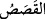
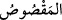
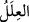

vücûd hadları belli oluyordu; ya da rüzgar (eteğini kaldırmış ve) bacakları açılmıştı. Bu
nedenle Mûsâ (a.s.): “Sen arkadan yürü, bana yolu tarif et!” dedi. Kız da geride kalıp
sağa, sola, öne… diyerek yolu tarif etti. Nihâyet Şuayb (a.s.)’ın evine vardılar. Kız, öne
geçip babasına haber verdi. Babası Şuayb (a.s.) da içeri girmesi için Mûsâ’ya izin
verdi. Şuayb (a.s.) o günlerde yaşlı ve ihtiyardı, gözü de görmüyordu. Mûsâ (a.s.) selâm
verdi, Şuayb (a.s.) selâmını alıp boynuna sarıldı. Sonra ona yemek ikram etti.
Mûsâ (a.s.) yemek yemekten çekindi ve dedi ki: “Korkarım, bu hayvanları sulamamın
bir karşılığı olur. Ben bir âiledenim ki, biz dünyalık karşılığında dînimizi satmayız.”
Çünkü Mûsâ (a.s.), Yakub evlâdlarından gelen bir peygamber âilesindendi.
Şuayb (a.s.) dedi ki: “Hayır, vallahi ey genç bu ikram senin yaptığın işin karşılığı
değildir. Bu şekilde ikram etmek, bizim evimize gelen her misâfire karşı bir
âdetimizdir.” Bunun üzerine Mûsâ (a.s.) yemekten yedi. İşte bir kimse iyilik yapar da
buna karşılık kendisine bir hediye verilirse, bunu alması haram olmaz.
“Mûsâ, ona (Hz. Şuayb’a) gelip başından geçeni anlatınca o: Korkma, o zalim
kavimden” yâni Firavun ve kavminden “kurtuldun,” çünkü bizim diyarımızda onun
hüküm ve hâkimiyeti yoktur; biz onun memleketinde değiliz “dedi”.
“ kelimesi; hikâye ve rivâyet edilen, anlatılan şey anlamına gelir. Mef’ûl olarak
isimlendirilmiştir. Yâni “, anlatılan, kıssa edilen haber” demektir. Bu tıpkı,
“sebep ve illet” mânâsına gelen “ kelimesinin ism-i mef’ûl mânâsında kullanılışına
benzer.
Âyetin işârî yorumu şudur: Kalb makâmında, nefsin âfet ve zulmânî sıfatlarının kalbe
isâbet etmesinden korkulur. Sırrı ile ruh makamına ulaşınca, nefsin zulmetinden ve
zulmânî sıfatlarından kurtulmuş olur. Bilindiği gibi sultan, dârü’l-harb’te olduğu sürece,
düşman korkusuyla yaşar. İslâm diyarına girince bu korku ondan zâil olup gider.
Diğer bir işârî yorum da şudur: Korkuya düşene “korkma” denildiği gibi, emniyet ve
güvende olana da “kork” denilir.
Mesnevî’de şöyle denilmiştir:
“Korkmayın” sözü, korkanlara sunulan bir yemektir
Bu, korkan kişiye lâyık bir yemektir
Korkana güven verirler
Korkan kimsenin gönlünü teskin ederler
Korkusu olmayana nasıl “Korkma!” dersin?
Derse muhtaç değil ki o, niçin ders verirsin?
Üveys Karânî (r.a.) der ki: “Sanki bütün insanları öldürmüşsün gibi korkarak ve
üzüntü ile Allah’ın emri üzere ol.”
Şuayb b. Harb der ki: Ne zaman Sevrî’ye baksam sanki o, arslanlar diyârında imiş
gibi her zaman korku ve haşyet üzere idi. Abdulaziz b. Ebî Dâvûd’a bakardım; onun da
duvardaki bir delikten kıyamet ahvâline muttali olur gibi bir hâli vardı.